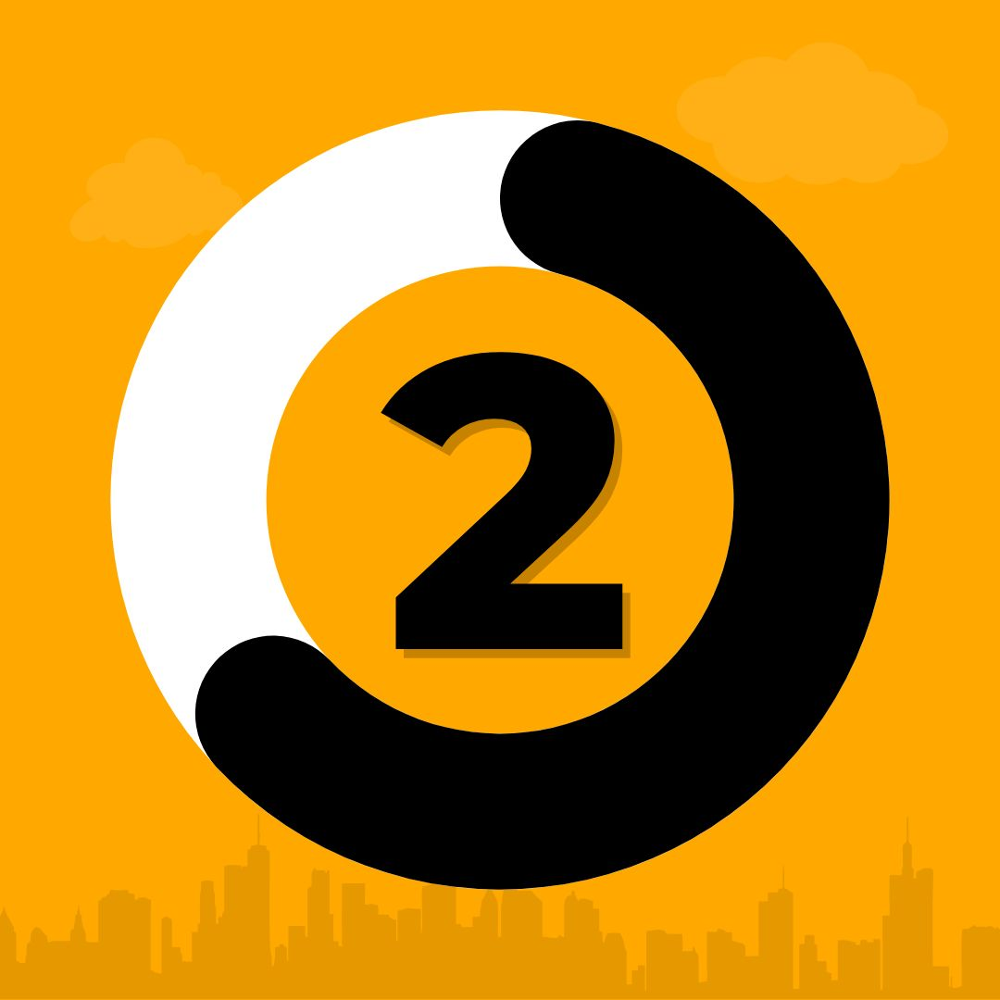
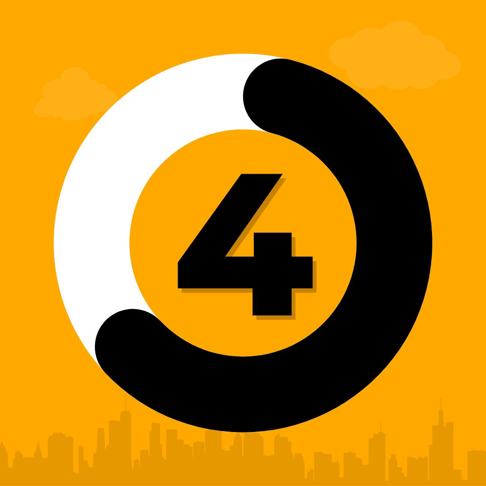

CNH suspensa/cassada? Foi pego na Lei Seca? Levou uma multa e quer se defender da maneira correta? Conte conosco!
Somos um escritório especializado no Direito de Trânsito, há mais de 10 anos no mercado.
RECURSOS DE MULTAS
RECURSOS DE TRÂNSITO
LEI SECA
Portfolio
ENTENDA MAIS SOBRE ALGUMAS DAS ÁREAS DE ATUAÇÃO DA SMT.
A SMT Advogados é um escritório focado no Direito de Trânsito, especializado na recuperação de CNH suspensa/cassada e anulação de multas de trânsito que está há mais de 10 anos no mercado.
Atuamos à nível nacional, de forma totalmente digital para acelerar a resolução das causas e prezar pelo conforto dos nossos clientes.
Contamos com profissionais altamente capacitados na matéria, preocupados com a constante atualização dos seus conhecimentos e implantação de inovações tecnológicas para atender seus clientes com máxima eficiência.
-----------------------
Suspensão e Cassação de CNH são a mesma coisa?
Não. A suspensão é uma penalidade mais branda do que a cassação. Suspensão é provisória e a Cassação é, em regra, definitiva (você precisará refazer o processo de habilitação para ter a CNH novamente).

-----------------------
Recebi uma multa e estou no limite da pontuação, posso recorrer?
Sim, é possível recorrer e evitar que ocorra a suspensão da CNH.
-----------------------
Perdi o prazo para indicação de condutor, e como o proprietário não possui CNH, gerou uma segunda multa por dirigir sem habilitação. Posso fazer alguma coisa?
Sim, é possível anular essa segunda infração.

-----------------------
Estou com minha CNH bloqueada por suspensão/cassação por excesso de pontos, consigo resolver?
Sim, através de uma estratégia jurídica chamada AIC, pergunte-me como.
A confiança entre a equipe e clientes é um dos principais alicerces para um trabalho de sucesso. Transparência, entendimento a respeito ao trabalho, motivos pelos quais algumas regras e práticas existem objetivando o progresso dos resultados.
CONTATE-NOS
ENVIE-NOS UM E-MAIL
LEI SECA
ENTENDA
"A Lei 11.705, aprovada em 2008, ficou mais conhecida como Lei Seca por reduzir a tolerância no nível de álcool no sangue de quem dirige. Com a sanção da nova lei, o Código de Trânsito Brasileiro foi alterado e provocou grandes mudanças nos hábitos da população brasileira."
"A antiga legislação permitia a ingestão de até 6 decigramas de álcool por litro de sangue (o equivalente a dois copos de cerveja). Quando foi sancionada, a Lei Seca tolerava 0,1 mg de álcool por litro de sangue. Atualmente, o nível máximo é de 0,05 mg/l.
"Diversas campanhas de conscientização expõem os riscos de dirigir depois de ter tomado bebidas alcoólicas, e há um grande empenho do poder público em realizar blitz e autuar aqueles que descumprirem a legislação. Na fiscalização, os condutores são orientados a soprarem no bafômetro para verificar a quantidade de álcool no ar que é expelido."
"Entre tantas polêmicas que envolvem a Lei Seca, o uso do bafômetro talvez seja a principal, pois algumas pessoas consideram o equipamento inconstitucional. Segundo alguns juristas, o cidadão não é obrigado a produzir provas contra si mesmo. Apesar de ser lícita a recusa em fazer o exame, o motorista estará sujeito às mesmas sanções que sofreria se tivesse feito o exame com resultado positivo."
"Além da investigação feita com o bafômetro, também são consideradas provas o testemunho dos agentes policiais ou de outras pessoas que estiverem próximas e o exame clínico, geralmente realizado no Instituto Médio Legal (IML)."
BATISTA, Rafael. "Lei Seca"; Brasil Escola. Disponível em: https://brasilescola.uol.com.br/quimica/lei-seca.htm. Acesso em 16 de agosto de 2022.
REFERÊNCIA
BATISTA, Rafael. "Lei Seca"; Brasil Escola. Disponível em: https://brasilescola.uol.com.br/quimica/lei-seca.htm. Acesso em 16 de agosto de 2022.
O novo modelo da Carteira Nacional de Habilitação já está sendo emitido com novas cores e idiomas. Ele é mais seguro e possibilita o uso do nome social.
Começou a ser emitido, no dia 1º de junho de 2022, o novo modelo da Carteira Nacional de Habilitação (CNH). As mudanças no formato do tradicional documento verdinho foram determinadas pela Lei nº 886 em dezembro de 2021, e são válidas para todo o território nacional. Só na última década, o número de carteiras de habilitação válidas no Brasil cresceu 38%, atingindo 74,3 milhões em 2020. Mas, o que mudou nesse novo modelo do documento? É preciso solicitar uma nova via?
O que mudou e como é a nova CNH?
A nova Carteira Nacional de Habilitação (CNH) continua com a mesma estrutura de antes: mesmo tamanho, lugar da foto, dos dados pessoais etc. Mas o documento ganhou algumas novidades que contribuem com a segurança e a modernização.
REFERÊNCIA
Criado em 07 jun 22 Atualizado em 07 jun 22 Outros por Juliano Augusto - Content Writer no Nubank Acesso em 16 de agosto de 2022 em: https://blog.nubank.com.br/nova-cnh-tudo-o-que-voce-precisa-saber/
Informamos que o protocolo via Peticionamento Eletrônico da PRF, em decorrência de manutenção programada, ficou indisponível entre 05/08/2022 e 09/08/2022. Visando garantir os direitos da ampla defesa e contraditório dos interessados, os protocolos de defesa, indicação de condutor e recurso, cujas notificações de autuação, penalidade e resultado de julgamento tenham vencido no período de indisponibilidade, serão considerados tempestivos para fins de análise/julgamento até o dia 10/08/2022.
Recorrer de uma multa consiste na contestação do auto de infração, quando forem verificados erros ou falhas no próprio auto ou nas notificações, após a emissão da notificação de penalidade. Caso ainda não tenha ocorrido a notificação de penalidade, clique aqui. O prazo para apresentação encontra-se expresso na Notificação de Penalidade. Para as infrações previstas no Código de Trânsito Brasileiro – CTB, o Recurso de Multa é analisado pela JARI e, caso seja indeferido, o requerente poderá fazer nova contestação, em 2º instância.
São legítimos para requerer Defesa de Autuação e Recurso de Multa: o proprietário do veículo, ocondutor, o transportador ou o embarcador/expedidor, identificados no auto de infração.
- Documento de identificação do requerente(que comprove a assinatura);
- Documento que comprove a representação (quando o requerente for pessoa jurídica);
- Procuração e documento de identificação do procurador (quando for o caso);
- Outros documentos que possam fazer prova ou colaborar para o esclarecimento dos fatos alegados.
A falta de assinatura e/ou de documentos comprobatórios, erros de preenchimento e ilegitimidade do requerente implicam no indeferimento do pedido.
O requerente é responsável penal, cível e administrativamente pela veracidade das informações e dos documentos fornecidos.
Deve ser preenchido um formulário para cada auto de infração, sendo necessário informar seu número, que é expresso no seguinte formato: X123456789. Os números dos autos de infração lavrados pela PRF iniciam-se com as letras B, E, R ou T e podem ser localizados na parte superior da Notificação de Autuação.
Prazo de atendimento: Conforme regulamento de processo administrativo.
REFERÊNCIA:
Publicado em 05/08/2020 15h59 Atualizado em 10/08/2022 12h41 no site: https://www.gov.br/prf/pt-br/servicos/multas/recurso-de-multa
A Lei 14.071/2020, conhecida como Nova lei de Trânsito, trouxe uma série de alterações para os motoristas brasileiros e uma delas é o número de pontos permitidos na Carteira Nacional de Habilitação (CNH).
As mudanças já estão em vigor desde o dia 13 de abril, mas, mesmo assim, muitos condutores ainda têm dúvidas sobre elas. Esse também é o seu caso?
Neste artigo, explico como ficaram os pontos na CNH com a Nova Lei de Trânsito e abordo outros pontos principais dessa Lei. Informe-se e evite multas!
Pontos na CNH com a Nova Lei de Trânsito: entenda o que mudou
A legislação de trânsito brasileira adota o Sistema de Pontos. Isso significa que, quando o condutor comete determinadas infrações, são gerados pontos em sua CNH. A quantidade de pontos depende da natureza da infração:
- Infração leve: gera 3 pontos na CNH
- Infração média: gera 4 pontos na CNH
- Infração grave: gera 5 pontos na CNH
- Infração gravíssima: gera 7 pontos na CNH
Os pontos se acumulam na CNH por um período de 12 meses e, depois disso, expiram. Tudo isso permanece igual na Nova Lei. O que muda é o limite de pontos permitidos, que deixa de ser fixo, como era, e passa a depender de um outro fator.
Esse fator é a quantidade de infrações gravíssimas que foram cometidas pelo motorista nos últimos 12 meses. Dessa forma, os novos limites são de:
- 40 pontos para o condutor que não cometeu nenhuma infração gravíssima;
- 30 pontos para o condutor que cometeu uma única infração gravíssima;
- 20 pontos para o condutor que cometeu duas ou mais infrações gravíssimas.
O que acontece quando o condutor ultrapassa esses limites? Nesses casos, como você verá adiante, está prevista a suspensão do direito de dirigir.
Exerço Atividade Remunerada com meu veículo, o que a lei me diz?
Algumas das atividades que mais cresceram nos últimos anos incluem o uso do veículo, como motoristas de aplicativos ou deliverys, por exemplo. Essas e outras profissões demandam que o motorista inclua o Exerce Atividade Remunerada em sua CNH.
Para esses condutores, ou seja, condutores que exercem atividade remunerada com o veículo e que têm o EAR constante no documento de habilitação, o limite não depende do número de infrações gravíssimas cometidas.
Nesses casos, o limite é fixo e é de 20 pontos. O que não muda, seja você um condutor que exerce atividade remunerada ou não, é o que fazer, caso tenha o seu direito de dirigir suspenso. Confira a seguir.
Tive a CNH suspensa, o que fazer?
O motorista brasileiro tem o direito de recorrer de multas e outras penalidades, como a suspensão da CNH. Por isso mesmo, se você teve sua CNH suspensa, só será obrigado a entregar o documento depois de esgotadas todas as chances de defesa.
Para recorrer, o processo pode acontecer em três etapas: a defesa prévia, o recurso em primeira instância (caso a defesa prévia seja negada) e o recurso em terceira instância (caso o recurso em primeira seja indeferido).
Para elaborar um bom recurso, é fundamental:
- Respeitar todos os prazos informados nas notificações que chegam ao seu endereço;
- Evitar usar argumentos subjetivos na sua defesa;
- Contar com a orientação de profissionais especializados em trânsito.
Caso o seu recurso seja negado em todas as instâncias ou se, por algum motivo, você decidir não exercer o seu direito de recorrer, serão necessários alguns passos para recuperar a CNH e poder dirigir novamente.
Como recuperar uma CNH suspensa?
De acordo com o art. 265 do CTB, a suspensão da CNH acontece em duas situações, sendo elas:
Pelo acúmulo de pontos
Pelo cometimento de uma infração autossuspensiva
Você já viu que tem o direito de recorrer e quais são as etapas nesse processo. No entanto, se sua defesa for negada em todas as instâncias ou se você não exerceu o seu direito de recorrer, terá que:
- Respeitar todo o prazo de suspensão
- Realizar o pagamento de multas e pendências (se houver)
- Passar pelo Curso de Reciclagem
- Realizar a avaliação final depois de cumpridas as 30h/aula do Curso
Depois dessas quatro etapas, o condutor recupera o seu direito de dirigir e estará apto a conduzir veículos automotores novamente.
Não fique sem dirigir!
Como você viu, o limite de pontos na CNH com a Nova Lei de Trânsito mudou. Mas, para evitar a suspensão da CNH, é importante respeitar as normas de trânsito e não cometer infrações, principalmente as gravíssimas.
E por que o CTB prevê penalidades mais extremas para quem excede a velocidade permitida na via?
O raciocínio é simples: porque quanto mais rápido estiver o veículo, mais fácil se torna perder o controle.
Por isso, exceder a velocidade pode ser considerada uma atitude perigosa ao volante.
A partir da próxima seção, você vai conhecer cada caso previsto pelo art. 218, e descobrirá os valores da multa por excesso de velocidade.
Valor da multa por excesso de velocidade até 20% acima do limite permitido
O inciso I do art. 218 apresenta o primeiro caso de excesso de velocidade: até 20% acima do limite permitido na via.
Neste caso, a infração é considerada média.
O valor da multa, portanto, é de R$ 130,16 e a infração gera 4 pontos na CNH.
É importante ressaltar que o limite de pontos permitido em um período de 12 meses foi atualizado em abril de 2022.
Até então, todos os motoristas poderia somar até 19 pontos na habilitação. Ao alcançar 20 pontos na carteira de habilitação, era aberto um processo administrativo para a suspensão do direito de dirigir do condutor.
Com as atualizações, o sistema de pontos passou a apresentar uma classificação diferente:
Limite de 20 pontos, caso cometa 2 infrações gravíssimas;
Limite de 30 pontos, caso cometa 1 infração gravíssima;
Limite de 40 pontos, caso não cometa nenhuma infração gravíssima.
O próximo caso de multa por excesso é um pouco mais sério.
Confira, a seguir, o que prevê o inciso II do art. 218.
Valor da multa por excesso de velocidade de 20% até 50% acima do limite de velocidade permitido
O excesso de velocidade de 20% até 50% acima do limite permitido é descrito no inciso II do art. 218 do Código de Trânsito.
Essa é uma infração grave, que gera 5 pontos na carteira de motorista.
Neste caso, o valor da multa é de R$ 195,23.
Ainda há mais um caso de multa por excesso de velocidade, desta vez, muito mais perigoso.
Por esse motivo, o terceiro caso gera penalidades ainda mais pesadas.
Para saber quais são, leia o tópico a seguir.
Valor da multa por excesso de velocidade acima de 50% do limite permitido
Ultrapassar em mais de 50% o limite de velocidade da via pode render multa e suspensão da CNH
Chegamos ao caso mais grave de multa por excesso de velocidade: o excesso de 50% acima da velocidade permitida na via.
Essa infração está prevista no inciso III do art. 218 do CTB e é considerada gravíssima.
O valor da multa, neste caso, deve ser multiplicado por 3, resultando em R$ 880,41.
No caso do inciso III, outra penalidade prevista é a suspensão da carteira de motorista.
Novamente, é possível notar que, quanto maior for o excesso de velocidade cometido pelo condutor, mais severas serão as penalidades.
Muito se fala em novos valores de multas, o que tem feito com que os condutores me procurem para saber se os valores das multas passaram por alteração recentemente.
A seguir, eu explico melhor esse assunto.
Novos Valores da Multa Por Excesso de Velocidade
É importante saber que o valor da multa por excesso de velocidade, em 2019, não sofreu alterações.
Os valores das multas de trânsito aumentaram a partir da publicação da Lei nº 13.281/2016.
As alterações passaram a valer em novembro do ano de 2016, quando a mudança nos valores feita pela referida lei entrou em vigor.
Portanto, os valores não foram alterados de 2016 para cá, apesar das mudanças na legislação de trânsito vistas ultimamente.
Um exemplo dessas alterações recentes que se relacionam ao excesso de velocidade é a determinação de suspensão do uso de radares móveis em rodovias.
Sobre isso, falo melhor na próxima seção deste artigo.
Entenda a Suspensão Dos Radares Móveis Nas Rodovias Brasileiras
A partir de 2019, os radares móveis foram proibidos nas BRs
Em agosto de 2019, foi publicada, no Diário Oficial da União (DOU), a determinação de suspensão do uso de radares móveis em rodovias federais, as famosas BRs.
Imediatamente, a medida foi acatada pela Polícia Rodoviária Federal (PRF).
Com isso, radares móveis instalados sobre viaturas ou em suporte, em viaturas em movimento e manuais deixaram de operar.
A justificativa dessa determinação foi a busca por diminuir o caráter lucrativo da fiscalização, em prol do aumento de sua função educativa.
A medida gerou polêmicas, pois especialistas, e até mesmo alguns condutores, criticaram a decisão, justificando a necessidade de fiscalização para a manutenção da segurança viária.
Em contrapartida, alguns motoristas aprovaram a determinação, pois concordam que os radares móveis eram usados com o intuito de arrecadar dinheiro por meio de multas.
E você, o que achou da medida de suspensão dos radares móveis em BRs?
Coloque sua opinião nos comentários.
Falando em radares, outro assunto polêmico envolvendo os aparelhos é uma possível tolerância na medição.
Para saber se existe tolerância em radar de velocidade, leia o tópico seguinte.
Radar de Velocidade Tem Tolerância?
Uma dúvida muito comum entre os condutores é: qual a tolerância de um radar?
Primeiramente, é preciso esclarecer que essa tolerância é, na verdade, uma margem de erro do aparelho de medição de velocidade.
Quando a velocidade medida for de até 107 Km/h, será de 7Km/h, já quando a velocidade medida for igual ou superior a 108Km/h a margem de erro será de 7%.
Você pode conferir a tabela das velocidades medidas e consideradas no Anexo II da Resolução nº 396/2011 do CONTRAN (Conselho Nacional de Trânsito).
Vamos supor que você passou a 60 km/h no radar de 50 km/h.
A sua velocidade medida vai ser 60 km/h e a sua velocidade considerada deverá ser 53 km/h.
Portanto, você deverá ser multado por excesso de velocidade até 20% acima do permitido na via.
Em uma via em que o permitido é 50 km/h, se a velocidade considerada variar entre 51 km/h e 60 km/h, o condutor deve receber uma multa média.
Se a velocidade considerada estiver entre 61 km/h e 75 km/h, a multa deverá ser grave.
E se a velocidade considerada for maior que 75 km/h, o condutor poderá receber uma gravíssima e ter a CNH suspensa.
Em qualquer um dos casos em que o condutor for enquadrado, é possível recorrer antes que as penalidades sejam aplicadas.
Sobre o recurso contra multa por excesso de velocidade, você pode ler na seção abaixo.
Como Recorrer e Cancelar Multas Por Excesso de Velocidade
Existem alguns detalhes em relação à medição dos radares que podem fazer a diferença em um recurso
Muitas pessoas acreditam que não devem recorrer das multas, em especial no caso das multas por radares com foto.
Mas a verdade é que recorrer é possível em qualquer caso de multa por excesso de velocidade.
A multa de trânsito é uma punição administrativa e, por isso, deve respeitar uma série de regras e procedimentos. Isso tudo para garantir sua legitimidade.
Há casos em que o órgão autuador comete erros nos procedimentos, gerando autuações indevidamente aplicadas.
No entanto, as regras não devem ser cumpridas somente pelos condutores, mas também pelas autoridades.
O recurso é uma possibilidade de destacar erros encontrados na autuação.
Ao ser encontrado qualquer erro na autuação, a penalidade deve ser cancelada.
Mas, antes de especificar as fases de recurso, acho importante alertar para a possibilidade de converter a multa por excesso de velocidade em advertência por escrito.
Essa é uma possibilidade existente para quem for autuado por excesso de velocidade até 20% acima do limite da via.
Você se lembra que essa infração é considerada média?
É exatamente por isso que quem for multado por exceder a velocidade em até 20% tem a possibilidade de converter a sua multa em advertência.
Antes da Nova Lei de Trânsito entrar em vigor, era preciso solicitar a conversão. Ou seja, ficava “nas mãos” da autoridade decidir anular ou não as penalidades que seriam impostas ao motorista.
Mas, a partir de 2022, o CTB passou a determinar que as penalidades de advertência por escrito deverão ser impostas sempre que o condutor cometer infração de natureza leve ou média, como é o caso da multa por exceder a velocidade em 20%.
Ou seja, a solicitação não irá precisar passar pela análise do órgão de trânsito!
Porém, é necessário que o motorista não tenha cometido nenhuma outra infração nos últimos 12 meses.
Mas, o que acontece caso você não possa mais realizar essa solicitação por já ter sido multado anteriormente?
Bem, é possível recorrer administrativamente, nas 3 etapas de recurso disponíveis no CTB:
É importante recorrer em todas as instâncias, pois, em cada etapa, existe uma nova chance de cancelar a penalidade.
Outro grande benefício de recorrer é ganhar tempo e, com isso, não estourar os pontos na CNH.
Não se esqueça que, ao atingir o limite de pontos dentro de um período de 12 meses, você pode acabar recebendo a notificação de suspensão.
No caso da multa por excesso de velocidade acima de 50%, a suspensão é gerada direto, sem ser necessária a soma dos 20 pontos.
Nos próximos tópicos, você confere algumas informações sobre o recurso contra a multa por excesso de velocidade.
Defesa prévia contra a multa por excesso de velocidade
O primeiro documento que o condutor recebe é a notificação de autuação.
Ela avisa que o condutor passou acima do limite de velocidade e que, por isso, uma multa será gerada.
Neste momento, é iniciado o prazo para a apresentação da defesa prévia, o qual estará indicado na própria notificação.
Na defesa prévia, são analisados os erros formais da notificação.
No caso das multas por excesso de velocidade, são comuns erros referentes aos radares.
A Resolução nº 396/2011 do CONTRAN apresenta alguns requisitos para o uso correto dos radares de velocidade.
Alguns desses requisitos são listados abaixo.
O radar deve registrar a placa do veículo, a velocidade medida do veículo em km/h, data e horário da infração, e a contagem volumétrica do tráfego no local.
A notificação deve conter informações referentes ao limite de velocidade da via em que a infração foi registrada, o local em que a infração ocorreu e a identificação do aparelho de medição utilizado.
É importante saber que os radares de velocidade devem ser fiscalizados regularmente pelo Instituto Nacional de Metrologia, Normalização e Qualidade Industrial (INMETRO).
A data em que o aparelho foi aferido pela última vez deve ser informada na notificação.
Portanto, caso a notificação não apresente esse dado, o condutor pode utilizar esse argumento em sua defesa prévia.
Se o órgão autuador negar a defesa, então será possível a apresentação de recursos, os quais serão encaminhados a duas instâncias diferentes.
A seguir, falo melhor sobre cada uma delas.
Recurso em 1ª instância contra a multa de velocidade
Em cada etapa, uma nova equipe analisa os argumentos e julga os recursos
Se a defesa prévia for negada, o motorista vai receber a notificação de penalidade, que deverá apresentar o valor da multa por excesso de velocidade em que foi enquadrado.
A notificação de penalidade indicará um prazo para o pagamento da multa.
Mas precisa pagar para recorrer?
Quando a multa é paga, os pontos não são cancelados. Eles continuam valendo.
Todos os dias, muitos motoristas me perguntam porque receberam a notificação de suspensão do direito de dirigir mesmo depois de pagar a multa.
Na verdade, o fato de pagar ou não a multa não interfere na pontuação ou nos recursos.
Portanto, a decisão entre pagar a multa antes ou depois de recorrer não interfere no direito de defesa do condutor.
Caso a decisão seja pagá-la, para aproveitar o desconto gerado pelo pagamento antecipado, e o recurso for aceito em uma das etapas, o condutor poderá solicitar o ressarcimento do valor corrigido.
O recurso em 1ª Instância é endereçado à JARI (Junta Administrativa de Recursos de Infração).
Na notificação recebida, é possível encontrar o endereço para o qual o recurso deverá ser encaminhado.
A JARI é composta por uma comissão julgadora diferente do grupo de avaliadores da defesa prévia.
Nessa fase, é importante selecionar argumentos com mais embasamento na legislação de trânsito.
Se a JARI indeferir o recurso, ainda existirá uma última instância para recorrer em âmbito administrativo, sobre a qual comento a seguir.
Recurso em 2ª Instância – última fase de recurso
Se a JARI negar o recurso, o condutor pode entrar com o recurso em 2ª Instância, que poderá ser enviado a endereços diferentes, de acordo com a determinação do art. 289 do CTB.
CONTRAN – em caso de suspensão da CNH por mais de 6 meses imposta por órgão ou entidade da União.
Colegiado especial da JARI – demais penalidades pela infração por excesso de velocidade aplicadas por órgão da União.
CETRAN – em caso de penalidades impostas por órgão estadual.
CONTRANDIFE – se as penalidades forem aplicadas por órgão do Distrito Federal.
É muito importante prestar, mais uma vez, atenção ao prazo e ao endereço para o envio do recurso, ambos indicados na notificação recebida.
Qualquer erro nessa fase pode determinar o insucesso do condutor, resultando em todas as penalidades já comentadas neste artigo.
Lembre-se: é direito de todos os cidadãos recorrer contra qualquer penalidade recebida no trânsito.
Se você ficou com dúvidas sobre o assunto abordado nesta publicação, escreva um comentário abaixo, para que eu possa ajudar a solucioná-la.
E, se você gostou deste artigo, compartilhe com os seus amigos e mostre a eles tudo o que é preciso saber sobre o valor da multa por excesso de velocidade.
Gustavo Fonseca é formado em Direito pela Universidade Federal de Pelotas (UFPel), especialista em Direito de Trânsito e processo administrativo, com mais de 10 anos de experiência. Confudador do Doutor Multas – referência online do Direito de Trânsito, com mais de 3 milhões de visitantes mensais. Mantém coluna na UOL e já contribuiu para grandes veículos como Veja e G1. Idealizou o aplicativo Motorista Consciente. Seus vídeos no Youtube e no Facebook já atingiram mais de 5 milhões de visualizações.
Se você chegou até aqui porque quer saber como funciona a suspensão da CNH, saiba que iremos esclarecer todas as suas dúvidas sobre o assunto.
Um dos maiores medos dos motoristas é ter a Carteira Nacional de Habilitação (CNH) suspensa.
Mesmo assim, ainda existem muitas dúvidas acerca do tema e poucas pessoas sabem qual o procedimento de suspensão e como ele acontece.
Se você está passando por ele, saiba que é possível entrar com recurso, contanto que você respeite os prazos das notificações.
Se você está passando por um processo administrativo, teve a CNH suspensa ou apenas deseja saber mais para se prevenir, continue lendo para entender tudo sobre a suspensão de CNH, suas etapas e o que fazer.
O que é a suspensão da CNH?
Formalmente conhecida como suspensão do direito de dirigir, a suspensão da CNH implica na perda do direito de dirigir por um certo período de tempo, que é alterada de acordo com o tipo da infração cometida.
Essa suspensão ocorre como punição por não obedecer às regras do Sistema de Trânsito Brasileiro e está prevista no artigo 256 do CTB (Código de Trânsito Brasileiro).
Após cumprir o tempo de suspensão e uma série de requisitos definidos pelas leis de trânsito, você pode recuperar seu documento de motorista e o direito de dirigir.
Como funciona a suspensão da CNH?
A penalidade de suspensão pode ocorrer de duas formas, de acordo com o art. 261. O tipo de infração também vai impactar no intervalo da suspensão do direito de dirigir.
Veja a seguir como funcionam os dois tipos de suspensão.
Como funciona a suspensão da CNH: suspensão por pontos
A suspensão por pontos acontece quando o condutor excede a pontuação de infrações permitidas pelo Código de Trânsito Brasileiro.
O número de pontos varia de acordo com o tipo da infração, que podem ser infrações leves (3 pontos), média (4 pontos), grave (5 pontos) ou gravíssima (7 pontos).
Antes de abril de 2021, a suspensão ocorria quando o condutor pontuava 20 ou mais pontos.
Com a nova lei 14.071/2020 o número de pontos permitidos é alterado pelo tipo de infração cometida, o que fez com que esse limite aumentasse em alguns casos.
Caso não haja infração gravíssima ou o condutor desempenhar atividade profissional, o limite é de 40 pontos.
Já se existir uma infração gravíssima o limite passa para 30 pontos.
Por fim, caso haja duas ou mais infrações gravíssimas, o limite é de 20 pontos.
Também é importante lembrar que esses pontos expiram em 12 meses, ou seja, deixam de contar depois de terem ocorrido, o que não quer dizer que você pode ficar despreocupado com a quantidade de multas.
Como funciona a suspensão da CNH: suspensão por infração auto suspensiva
Outra forma de ter a CNH suspensa é cometer uma das infrações auto suspensivas, que são infrações gravíssimas que geram a suspensão imediata da carteira de habilitação, independente da quantidade de pontos que você possua.
Nesses casos, você recebe a notificação da multa e se não entrar ou não for aceito recurso, além do início do procedimento administrativo para suspensão, são somados sete pontos na sua carteira, além de ser necessário o pagamento da multa, que normalmente tem um custo bem alto.
Dentre as principais infrações auto suspensivas estão:
dirigir sob influência de álcool;
recusar o teste de bafômetro;
usar o veículo para interromper a circulação da via pública sem autorização;
organizar interrupção da circulação da via pública sem autorização.
O que é reincidência?
De acordo com o Código de Trânsito Brasileiro, a reincidência acontece quando o motorista excede o limite da pontuação ou comete a mesma infração auto suspensiva no intervalo de doze meses desde a primeira suspensão.
Caso haja essa repetição, haverá um aumento no tempo da suspensão do condutor, que será de acordo com o prazo inicial da penalidade.
Como funciona a suspensão da CNH: passo a passo do processo de suspensão
Segundo com a nova legislação, o início do processo administrativo depende da ação de um dos órgãos rodoviários, como o Departamento Estadual de Trânsito (DETRAN) e o Conselho Estadual de Trânsito (CETRAN).
Para começar o processo, são usadas as informações do Registro Nacional de Infrações (RENAINF) para unificar os dados do órgão de trânsito acerca das infrações cometidas pelo motorista.
A partir daí, acontece o processo nas instâncias administrativas, que é dividido em três etapas.
A primeira delas é o envio da notificação de autuação, que tem como função avisar sobre as infrações cometidas e as penalidades, além de informar o limite de tempo de envio da sua defesa prévia, que vai determinar se haverá continuação do processo.
Para se certificar de obter a notificação, é importante que você mantenha seus dados atualizados junto aos órgãos de trânsito.
A continuação do processo é conhecida como primeira instância, onde é enviada a notificação de imposição da penalidade, que detalha o prazo de suspensão e o valor da multa a ser paga, se for a situação de uma infração auto suspensiva.
Nessa etapa, você também é possível recorrer, apresentando o recurso à Junta Administrativa de Recursos de Infrações (JARI).
Caso seu recurso não seja aceito, o processo vai para a segunda instância e você tem uma última chance de recorrer, dessa vez ao Conselho Estadual de Trânsito (CETRAN).
Se você não tiver sucesso nessa etapa, não haverá mais possibilidade de recorrer e você receberá em até 48 horas uma notificação com o prazo para entregar sua CNH no DETRAN, que costuma ser de 15 dias.
A partir do momento da entrega da CNH é iniciado o período de suspensão.
Caso não haja entrega, a suspensão passa a valer automaticamente depois de 15 dias do envio da notificação.
Como recorrer à suspensão da CNH?
Como foi descrito acima, você tem três chances de recorrer ao processo de suspensão do direito de dirigir.
Em cada uma delas, é preciso estar atento ao prazo e ao tipo de defesa que deve ser apresentado, além da forma como deve ser entregue (presencialmente, por carta ou online) que varia conforme o tipo de órgão de trânsito.
Na primeira etapa, depois de receber a notificação de autuação, você pode apresentar a defesa prévia com um prazo que costuma ser de 15 dias, apontando os erros em sua autuação.
Na segunda etapa ou primeira instância, o recurso deve ser bem elaborado, baseado nas leis de trânsito e em provas, apresentando argumentos baseados na legislação.
Nessa etapa o prazo é de 30 dias e você deve encaminhar seu recurso à JARI.
Se não for enviado nenhum tipo de recurso nessa etapa, você perde o direito de recorrer na segunda instância.
Na terceira etapa ou segunda instância, você tem sua última oportunidade de recorrer e cancelar o processo de suspensão.
Para isso, você deve estar atento aos documentos que serão solicitados e desenvolver um bom recurso que pode ter auxílio jurídico, num prazo de 30 dias.
Quanto tempo dura a suspensão?
O tempo de suspensão varia de acordo com o tipo de infração cometida e, caso seja reincidência, esse tempo pode aumentar ainda mais.
Se o motivo for excesso de pontos, a suspensão pode durar de 6 até 12 meses. Em caso de reincidência por pontos, esse prazo aumenta para 8 até 24 meses.
Já no caso das infrações auto suspensivas, o tempo da suspensão vai variar de acordo com a infração cometida, sendo na maioria das vezes de 2 a 8 meses, mas podendo chegar a até 12 meses dependendo da infração.
Alguns exemplos de infrações que geram 12 meses de suspensão são: dirigir sob influência de álcool e recusar o teste de bafômetro.
Em caso de reincidência da mesma infração auto suspensiva, o prazo aumenta para 8 a 18 meses.
Como saber se minha CNH está suspensa?
Para saber qual a situação da sua CNH, a quantidade de pontos que você tem registrado ou até mesmo consultar informações sobre seu processo de suspensão, caso haja um, você pode utilizar o site do DETRAN para conferir todas essas informações, além de poder checar seu histórico de multas e validade da CNH.
Para acessar essas informações, você deve criar um cadastro com senha.
Outra opção é baixar o aplicativo da Carteira Digital de Trânsito, que apresenta essas informações além de disponibilizar a versão digital da sua CNH e dos documentos do seu veículo.
Além disso, caso o motorista não receba a notificação de autuação, na maioria das vezes por falta de atualização dos dados junto aos órgãos de trânsito, é obrigatório que a autuação seja publicada no Diário Oficial.
O que fazer depois de ter a CNH suspensa?
Depois da suspensão e da entrega da carteira de habilitação, o motorista deve completar o prazo de suspensão, além de realizar o curso de reciclagem e uma prova teórica.
Esse curso tem como objetivo reeducar o condutor para que ele possa voltar a dirigir de forma segura, sendo oferecido pelo DETRAN e pelos Centro de Formação de Condutores (CFC) do município do motorista.
O curso de reciclagem tem caráter obrigatório, duração de 30 horas, pode ser feito durante o prazo de suspensão da CNH e aborda os seguintes tópicos: legislação de trânsito, noções de primeiros socorros, direção defensiva e relacionamento interpessoal.
Dependendo do lugar a ser realizado, pode ser feito de forma presencial ou online.
Em São Paulo, além da opção de fazer em um CFC de forma paga, existe a opção de fazer pela Escola Pública de Trânsito que disponibiliza todo mês novas vagas para o curso de reciclagem, a inscrição é feita de forma online no portal do DETRAN de São Paulo.
Depois da realização do curso, o motorista deve fazer a prova teórica de 30 questões que abordam os temas do curso e será aprovado caso acerte 70% (ou 21 questões).
Caso o condutor não passe na prova de primeira, ele pode refazer a prova novamente, mas é preciso refazer o curso igualmente.
Consequências de dirigir com a habilitação suspensa
Não cumprir o prazo de suspensão do direito de dirigir pode trazer consequências ainda piores ao motorista.
Isso porque desrespeitar o tempo de suspensão é considerado uma infração gravíssima, que leva o condutor a ser multado, além de ter seu veículo retido e poder levar a cassação da CNH.
Aliás, isso dificulta ainda mais o processo de recuperação da CNH, podendo aumentar o prazo do tempo sem poder dirigir para até dois anos.
Além disso, caso o motorista seja flagrado dirigindo de forma perigosa com a CNH suspensa, pode ser enquadrado em um crime de trânsito que leva o indivíduo a receber multa ou até mesmo ser detido por um intervalo de 6 a 12 meses.
Diferença entre suspensão e cassação da CNH
Agora que você entendeu como funciona a suspensão da CNH, é importante entender outro conceito: a diferença entre suspensão e cassação.
Embora as duas penalidades resultem na perda do direito de dirigir, não são a mesma coisa.
Como explicado anteriormente, a suspensão da CNH é resultado de um processo administrativo que ocorre por conta do excesso de pontuação por infrações na carteira de motorista, ou ainda por cometer uma infração auto suspensiva.
No caso da suspensão, você tem a opção de recorrer à autuação e, caso não consiga, tem sua CNH bloqueada por um certo período que vai de 2 meses a 2 anos (caso haja reincidência), além de ter que fazer o curso de reciclagem.
Já o processo de cassação da CNH é mais rígido.
Ele pode ocorrer quando o motorista é pego dirigindo com a CNH suspensa, quando acontece um crime de trânsito com condenação ou quando a reincidência de certas infrações auto suspensivas no período de 12 meses.
É possível recorrer à cassação da mesma forma que no caso de suspensão, mas é muito mais difícil que o recurso seja aceito.
A cassação causa o cancelamento da CNH do motorista que perde o direito de dirigir por 2 anos e deve passar pelo processo de conseguir uma habilitação (aulas teóricas e práticas, provas, exame médico e psicotécnico) desde o início e só após cumprir integralmente os 2 anos sem dirigir.
REFERÊNCIA
24 de junho de 2022 Por Equipe de Conteúdo. Acessado em: https://reviewauto.com.br/como-funciona-a-suspensao-da-cnh/